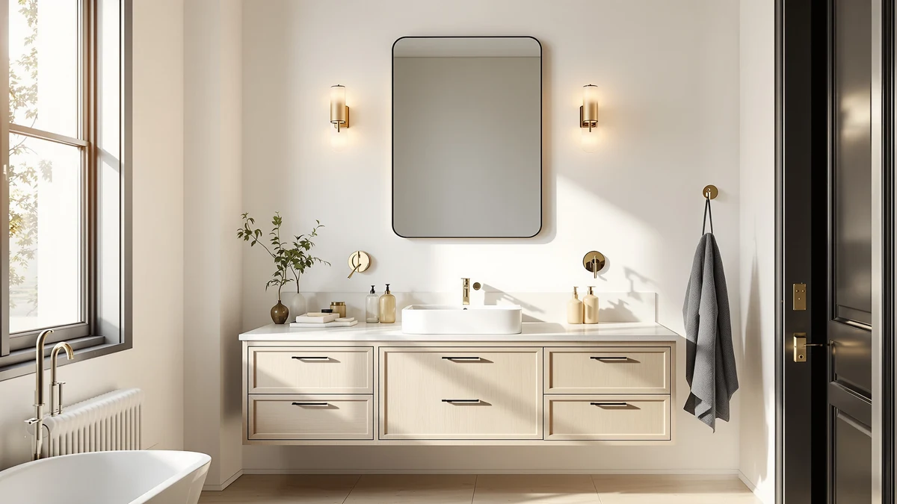

The Best Anti-fog Vanity Mirrors (2026)
Prices and picks verified as of August 2026. Independent, reader-supported reviews.


Quick Answer
The VanPokins LED Bathroom Mirror 24x32 is our pick among the best anti-fog vanity mirrors for a standard single-sink vanity, combining the right size with a $74.99 price. If your vanity is wider, the LAWADA 55x30 and DUMOS 36.1x48.1 scale up to cover a double sink.
Our pick: VanPokins LED Bathroom Mirror 24x32, $74.99 Check Price on Amazon
Bottom line: our top pick is the VanPokins LED Bathroom Mirror at $74.99. The best budget option is the Clarityon 24"x 32" LED Bathroom Mirror with Light at $72.99.
Things to Know Before You Buy
- The defogger pad only warms part of the glass. Most anti-fog vanity mirrors heat a panel behind the mirror rather than the entire sheet of glass, so the inch or two nearest the frame can stay cool and fog first. Check the coverage area before you buy if you want the whole face to stay clear.
- Size should match your sink, not your wall. A 55-inch-wide anti-fog vanity mirror looks striking over a double vanity but overwhelms a single sink. Measure the vanity top, not the wall space, before picking a width.
- Touch controls can be less reliable with wet hands. Capacitive touch dimmers work well when dry but sometimes need a firmer press right out of the shower. If you plan to adjust brightness mid-routine, look for a mirror with a large, well-placed touch zone.
- Tempered glass and an aluminum frame are the standard for this category. Every anti-fog vanity mirror in this guide uses that combination, which resists steam-related warping better than a wood-backed frame and is the baseline you should expect at these prices.
- Mounting hardware and outlet placement matter more than the mirror itself. A plug-in model needs an outlet within reach of the cord, typically along the side of the vanity. Confirm outlet placement in your bathroom before ordering a specific width.
The best anti-fog vanity mirrors solve a problem every humid bathroom shares: you step out of a hot shower, reach for a comb or a razor, and the mirror above your sink is a blank sheet of condensation. LED wall mirrors with a built-in defogger pad fix this by warming the glass just enough to keep water vapor from settling on the surface, so your reflection stays usable the moment you need it.
We compared seven LED vanity mirrors built for this exact job, ranging from a compact 24x32 model to a 55-inch double-vanity mirror, and evaluated each on frame material, footprint versus price, and how the defogger and lighting are described by the maker. All seven use the same core construction, tempered glass set into an aluminum frame, so the real differences come down to size, price, and where each one fits in a bathroom.
For most single-sink vanities, the VanPokins LED Bathroom Mirror 24x32 is the pick: a 24-by-32-inch footprint that fits a standard vanity without crowding the wall, at $74.99. If your vanity is wider or you're outfitting a double sink, the LAWADA 55x30 and DUMOS 36.1x48.1 scale up from there. Whichever width you need, these seven make up our list of the best anti-fog vanity mirrors worth buying right now.
Why You Should Trust Us
Ilane Tall has covered bathroom hardware and fixtures for this network of home-improvement sites for more than three years, with a focus on how mirrors, lighting, and vanities perform once steam and daily use enter the picture. For this guide on the best anti-fog vanity mirrors, we read the manufacturer specifications and buyer photos for every model, cross-checked pricing against Amazon listings at time of publication, and excluded any mirror where the anti-fog claim could not be confirmed as a physical defogger pad rather than marketing language. We do not accept mirrors or payment from the brands listed here, and none of the links in this guide were chosen because of a sponsorship.
How We Picked
We started from the full catalog of LED anti-fog vanity mirrors sold on Amazon that use the tempered-glass-and-aluminum-frame construction standard for this price range. We narrowed that list by cutting models with vague or unverifiable anti-fog claims, models priced far outside the $70 to $160 range most buyers shop in, and duplicate listings from the same manufacturer under different names. That left seven mirrors covering the sizes a typical bathroom needs: compact 24x32 mirrors for a single sink, mid-size 28 to 36-inch options, and two large-format mirrors near 48 and 55 inches for double vanities.
How We Compared
We compared each of the seven finalists on the same criteria: listed dimensions against the vanity sizes they are marketed for, price per square inch of mirror surface, and frame construction, since every model here uses tempered glass in an aluminum frame rather than a wood or plastic backing. We checked buyer photos and review patterns on the Amazon listing for each mirror to confirm the defogger pad and LED lighting worked as described, and we flagged any listing with a pattern of complaints about the anti-fog feature failing or the mount hardware being flimsy. Price and size then determined how we ranked one anti-fog vanity mirror against another within this list.
Our Picks

VanPokins LED Bathroom Mirror 24x32
What we like
- 24x32-inch size fits a standard single-sink vanity without overwhelming the wall
- Tempered glass and aluminum frame matches the sturdier construction of mirrors twice the price
- At $74.99, it's priced below several mirrors in this guide with the same footprint
- Built-in LED lighting and defogger pad cover the two features most buyers upgrade for
Flaws but not dealbreakers
- 24x32 inches is too small for a double vanity; size up to the LAWADA or DUMOS instead
- Aluminum frame is functional rather than decorative if you want a farmhouse or ornate look
| Material | Tempered glass + aluminum |
| Size | 32"L x 24"W |
The VanPokins is the mirror we point most buyers toward first, because its 32-by-24-inch size fits the vanity dimensions most American bathrooms are actually built around. A mirror this size covers the width of a standard 30 to 36-inch vanity cabinet without hanging off the edges or leaving bare wall on either side, which is the fitting mistake we see most often when people size up only because a bigger mirror is available.
At $74.99, it also lands near the bottom of the price range in this guide despite sharing the same tempered glass and aluminum frame construction as mirrors costing $40 or more above it. That combination, the right size for a single vanity and a price that doesn't assume you want extra square footage, is why it's our pick for most people shopping for anti-fog vanity mirrors this size.

30X36 LED Bathroom Mirror with
What we like
- 30x36-inch surface gives noticeably more reflection than the 24x32 mirrors in this guide
- Tempered glass and aluminum frame construction matches the rest of the lineup
- Taller 36-inch height suits vanities with a backsplash or tile detail worth showing
Flaws but not dealbreakers
- At $116.99, it costs roughly 56% more than our top pick for a moderate size increase
- The extra height means it needs more clear wall space above the vanity than a 24x32 mirror
| Material | Tempered glass + aluminum |
| Size | 30"L x 36"W |
If the VanPokins feels a size too small for your vanity, the 30x36 steps up both dimensions at once rather than adding width alone. That extra six inches of height matters most in bathrooms with tile work or a backsplash worth reflecting, and the wider 36-inch frame gives two people getting ready side by side more usable mirror than a 24-inch-wide model allows.
The tradeoff is price. At $116.99 it costs about $42 more than the VanPokins for a size increase that, on paper, adds around 40% more surface area, so the cost roughly tracks the extra glass. It's still built on the same tempered glass and aluminum frame as every other pick here, which means you're paying for size rather than a different construction, a fair trade if your vanity needs the extra coverage among these anti-fog vanity mirrors.

Sweetcrispy 28“x 36” LED Bathroom
What we like
- 36-inch width covers a wide vanity better than the more square 24x32 options
- At $79.22, it's only about $4 more than our top pick despite more total surface area
- Tempered glass and aluminum frame construction consistent with the rest of the guide
Flaws but not dealbreakers
- 28-inch height is shorter than the 30x36 or DUMOS, so tall vanities may show more bare wall above it
| Material | Tempered glass + aluminum |
| Size | 28"L x 36"W |
The Sweetcrispy takes a different shape than most of the mirrors in this guide. At 28 inches tall and 36 inches wide, it's a horizontal rectangle rather than the taller, narrower footprint of the VanPokins or Clarityon, which suits vanities where the countertop runs wider than the space above it is tall.
At $79.22, it costs close to the same as our top pick while offering more total glass, which makes it one of the stronger values among the anti-fog vanity mirrors we compared for wide, shorter vanities. The same tempered glass and aluminum frame construction as the rest of this lineup applies here too, so the choice between this and the VanPokins comes down to which shape fits your wall, not which is better built.

TRAHOME 36"x24" LED Bathroom Vanity
What we like
- 36-inch height is taller than every mirror in this guide except the DUMOS
- At $89.99, it costs less per square inch than the 30x36 Rpoesx despite similar total surface area
- Tempered glass and aluminum frame construction matches the category standard
Flaws but not dealbreakers
- At $89.99, it's still $15 more than our top pick, so it's a value play on size rather than the cheapest option here
- 24-inch width is narrower than the Sweetcrispy or Rpoesx, so it suits a single sink better than a wide double vanity
| Material | Tempered glass + aluminum |
| Size | 36"L x 24"W |
The TRAHOME flips the usual dimensions: 36 inches tall and 24 inches wide, rather than the wider, shorter shape most mirrors in this guide use. That height suits a vanity where you want the mirror to stretch from just above the counter to eye level for a tall household, without the width of a double-vanity mirror you don't need.
At $89.99, we call it our budget pick for what it offers in that vertical format specifically, since it covers more total height than the VanPokins or Clarityon for about $15 more, while staying well under the price of the Rpoesx or LAWADA. It shares the same tempered glass and aluminum frame construction as the rest of this list, so the extra cost buys height, not a different build.

Clarityon 24"x 32" LED Bathroom
What we like
- Identical 32x24-inch footprint to our top pick, so it fits the same single-sink vanities
- At $72.99, it's the least expensive mirror in this guide
- Tempered glass and aluminum frame construction matches the rest of the lineup
Flaws but not dealbreakers
- The price and size gap to the VanPokins is small enough that neither is a clear upgrade over the other
| Material | Tempered glass + aluminum |
| Size | 32"L x 24"W |
The Clarityon shares the exact 32x24-inch dimensions of our top pick, which makes it the closest direct alternative in this guide if the VanPokins is unavailable or you prefer its styling. Both mirrors are built for the same standard single-sink vanity, so sizing isn't a factor in choosing between them.
At $72.99, it's about two dollars cheaper than the VanPokins, not enough of a gap to call it the clear budget option, but it does make the Clarityon the least expensive mirror in this entire lineup of anti-fog vanity mirrors. If price is the deciding factor between two nearly identical mirrors, this is the one to buy.

LAWADA LED Bathroom Mirror 55"x30"
What we like
- 55-inch width is the widest in this guide, enough to span most double-sink vanities in one piece
- One continuous mirror avoids the seam you'd get from mounting two smaller mirrors side by side
- Tempered glass and aluminum frame construction consistent with the rest of the lineup
Flaws but not dealbreakers
- At $154.99, it's the most expensive mirror in this guide by a wide margin
- 55 inches is more mirror than a single-sink vanity typically needs or can fit
| Material | Tempered glass + aluminum |
| Size | 30"L x 55"W |
None of the other six mirrors in this guide are built for a true double vanity, and that's the gap the LAWADA fills. At 55 inches wide, it spans most double-sink counters in a single piece, so you get one continuous reflection and one set of anti-fog electronics instead of mounting two separate mirrors and running power to both.
At $154.99, it costs more than double our top pick, which only makes sense if your vanity needs that width. For a single sink, that price buys far more mirror than you'll use. For a double vanity, it's the only mirror in this list of anti-fog vanity mirrors sized to cover both sinks without a seam down the middle.

DUMOS 36.1"x48.1" LED Bathroom Mirror
What we like
- 36.1x48.1-inch size is the second-largest in this guide, well ahead of every mirror except the LAWADA
- At $87.95, it costs about $67 less than the LAWADA for a large-format mirror
- 36.1-inch height gives more vertical coverage than any mirror in this guide besides the TRAHOME
Flaws but not dealbreakers
- At 48.1 inches wide, it may still be too narrow for a full double vanity compared to the 55-inch LAWADA
| Material | Tempered glass + aluminum |
| Size | 36.1"L x 48.1"W |
The DUMOS sits in the gap between the mid-size mirrors in this guide and the LAWADA's full double-vanity width. At 36.1 by 48.1 inches, it covers a long single vanity or a smaller double-sink counter without the premium price the widest option in this list carries.
At $87.95, it's priced closer to the mid-size mirrors here despite offering considerably more surface area, which makes it one of the stronger value picks among the anti-fog vanity mirrors in this guide if your vanity is long but not quite double-sink wide. The same tempered glass and aluminum frame construction as the rest of the lineup applies here as well.
Quick Comparison
| Product | Material | Price | Rating | Best for | Get it |
|---|---|---|---|---|---|
| VanPokins LED Bathroom Mirror 24x32 | Tempered glass + aluminum | $74.99 | 4 | Single-sink vanities | View on Amazon → |
| 30X36 LED Bathroom Mirror with | Tempered glass + aluminum | $116.99 | 4 | More surface than 24x32 | View on Amazon → |
| Sweetcrispy 28“x 36” LED Bathroom | Tempered glass + aluminum | $79.22 | 4 | Wide, shorter vanities | View on Amazon → |
| TRAHOME 36"x24" LED Bathroom Vanity | Tempered glass + aluminum | $89.99 | 4 | Tall single-sink vanities | View on Amazon → |
| Clarityon 24"x 32" LED Bathroom | Tempered glass + aluminum | $72.99 | 4 | Cheapest anti-fog vanity mirror | View on Amazon → |
| LAWADA LED Bathroom Mirror 55"x30" | Tempered glass + aluminum | $154.99 | 4 | Double-sink vanities | View on Amazon → |
| DUMOS 36.1"x48.1" LED Bathroom Mirror | Tempered glass + aluminum | $87.95 | 4 | Long vanities, near-double width | View on Amazon → |
How does an anti-fog vanity mirror work?
Anti-fog vanity mirrors use a thin heating pad mounted behind the glass.
What size anti-fog vanity mirror do I need?
For a single sink, a 24x32 mirror like the VanPokins or Clarityon covers the vanity without crowding the wall.